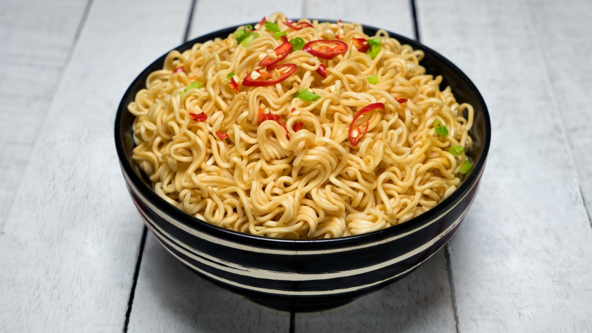

Mac and Cheese

Description
Instant noodles are a quick and easy meal that can be enjoyed any time of day. With just a few simple ingredients, you can elevate your instant noodles to a delicious and satisfying dish. This recipe provides a basic way to prepare instant noodles, but feel free to add your favorite vegetables, proteins, and toppings to make it your own.
Ingredients
- 1 pack instant noodles
- 2 cups water
- 1 egg (optional)
- 1 green onion, chopped (optional)
- 1/2 cup cooked chicken, beef, or tofu (optional)
- 1/2 cup mixed vegetables (optional)
Steps
- Bring 2 cups of water to a boil in a pot.
- Add the instant noodles and cook for 2-3 minutes, or until the noodles are tender.
- If adding an egg, crack it into the pot and gently stir to create an egg drop soup effect, or let it poach for a whole egg.
- Add the seasoning packet that comes with the instant noodles, stirring well to combine.
- If adding cooked chicken, beef, tofu, or vegetables, stir them into the pot and heat through.
- Once everything is heated and well combined, pour the noodles and broth into a bowl.
- Top with chopped green onion if desired.
- Enjoy your delicious and upgraded instant noodles!